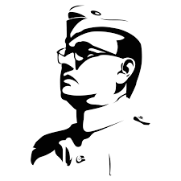
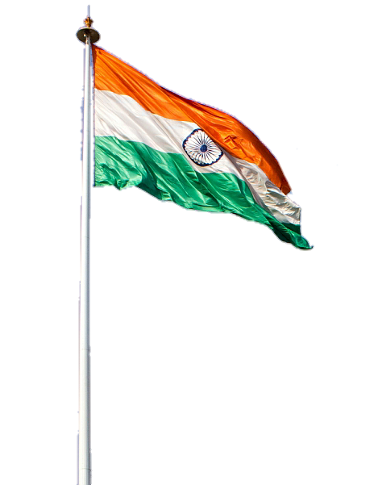
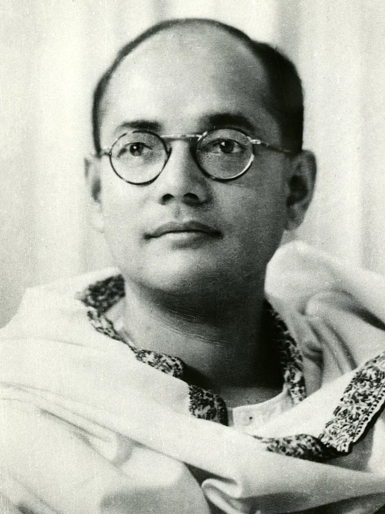

Parakram Diwas 2023 |
|
Remembering Netaji Subhash Chandra Bose on his birth anniversary |
|
|
Parakram Diwas 2023: India celebrates Parakram Diwas on January 23 to mark the birth of prominent Indian freedom fighter Netaji Subhas Chandra Bose... |
| 
Greeting to all on Parikrama diwas |
We must build up our national defence on such an unshakable foundation never again in our history shall we lose our freedom |
 |
| Remembering NETAJI SUBHASH CHANDRA BOSE on his 126 jayanti |
Humbles tribute to the great son of Maa Bharti |
| Parakram Diwas 2023: Parakram Diwas is observed on January 23 on the occasion of the birth anniversary of Netaji Subhash Chandra Bose. Today is the 126th birth anniversary of Netaji. Bose was one of the prominent heroes of Inda's independence struggle. Referred as Netaji, he fought for independence throughout his life, within the country and from abroad. Owing to the legendary freedom fighter’s extraordinary contribution to the Indian freedom struggle, the government designated Netaji’s birthday as Parakram Diwas in 2021. |  |
About Netaji Subhash Chandra Bose - |
|||||
| Netaji’ was born on January 23, 1897, in Cuttack in Odisha. He acquired a degree in philosophy and was later selected for the Indian Civil Services. He refused to join as he did not want to serve the British Government. | His appealing slogan - "Tum mujhe khoon do, mai tumhe azadi doonga (You give me blood, I will give you freedom)”- fuelled Indians with patriotism during the freedom struggle | Born to Jankinath, a prominent lawyer, and Prabhavati, Bose was the 9th child among their 14 children including 8 sons and 6 daughters | He attended Presidency College, Calcutta, till his suspension in 1916 due to nationalist activities. Later he graduated from Scottish Churches College in 1919. | To prepare for the Indian civil service examination, he was sent by his parents to England's University of Cambridge. | He went missing on August 18, 1945, after a plane crash in Taiwan. Out of three inquiry commissions on the accident, two claimed he died due to the crash while one stated was alive after the tragedy. |
|
register at https://www.virtuality.org.in/ |
instagram.com/virtuality/ |
linked.com/virtuality/ |
twitter.com/virtuality |